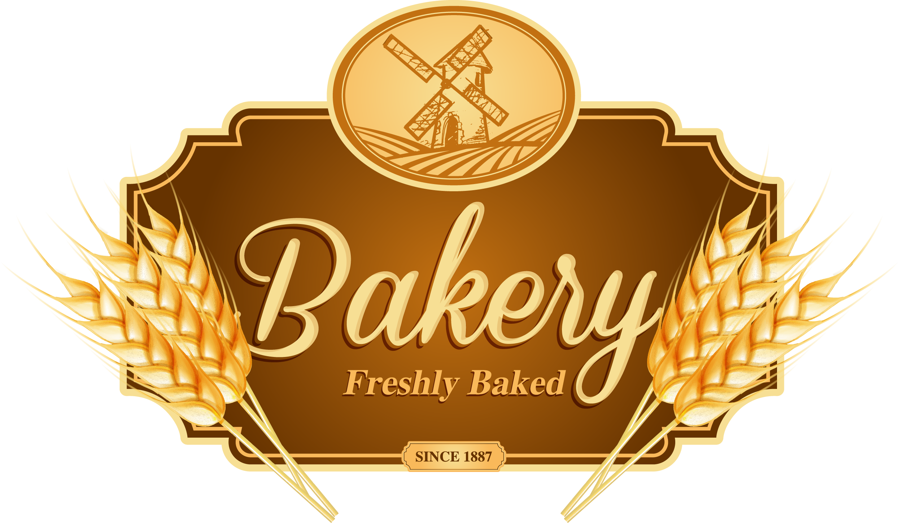

O sabor do verdadeiro pão artesanal!
Feito com ingredientes frescos e naturais, nosso pão artesanal traz o sabor e a textura que você nunca experimentou antes. Sinta o cheiro e o sabor de pães fresquinhos feitos com amor.
Por que escolher o nosso pão?
- Sem conservantes
- Ingredientes naturais
- Preparado com receitas tradicionais
- Fresco e recém-saído do forno
Não perca a chance de saborear o melhor pão artesanal da cidade! Faça seu pedido agora!
Sobre nós
No Pão Artesanal Alexander, acreditamos que o pão vai muito além de um simples alimento. É uma tradição, um aconchego e uma verdadeira arte. Nossa paixão pela panificação artesanal começou com o desejo de resgatar o sabor autêntico e a qualidade dos pães feitos à mão...
Contato
Informações de contato
- Telefone: (XX)-XXX-XXXX
- E-mail: pãesalexander@gmail.com
- Redes Sociais: @PãoArtesanal
Endereço
Rua São Pão - Iririu, Florianópolis - SC